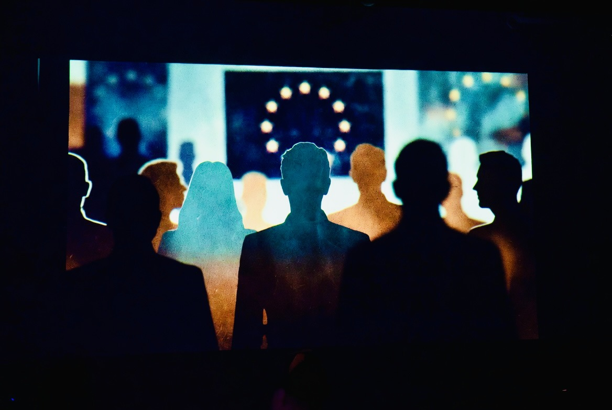
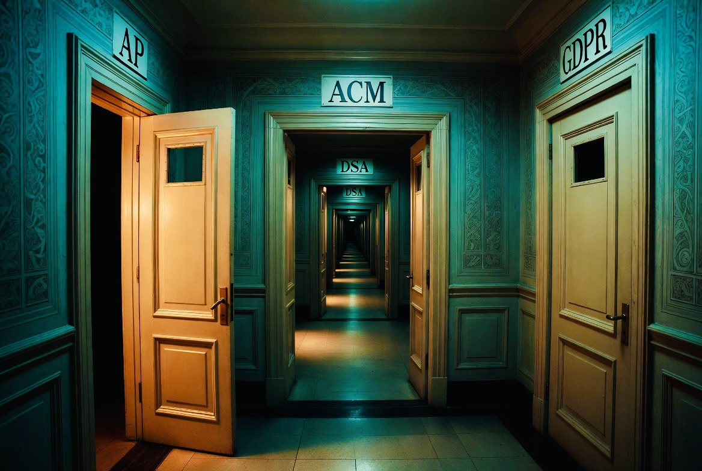

On June 17, 2026, the European Commission posted on X: "Looking for a new place to debate Europe? Follow our account on W, a freshly launched independent social media network, based in Europe and aiming for open, safer online conversations." The Commission had officially begun migrating its public communications to W Social.
The same day, the Commission's competition directorate was asking European citizens to submit feedback on new merger guidelines before a June 26 deadline, guidelines that explicitly address digital market concentration and the need for European competitiveness. The same week, the Commission published its Tech Sovereignty Package. And six months after a Dutch citizen filed a complaint with the AP about a LinkedIn account suspension, the AP had told him it was the ACM's problem, the ACM had told him it was a structural signal rather than an individual case, and nobody had given him a contact name.
These are not separate stories. They are the same story, told from three different angles, about the distance between what European digital sovereignty looks like on paper and what it produces in practice.
What W Social Actually Is
W Social AB is a limited company incorporated in Sweden, a subsidiary of We Don't Have Time AB. Its CEO and co-founder is Anna Zeiter, previously Chief Privacy Officer at eBay. Its chairman is Ingmar Rentzhog, a Swedish climate entrepreneur. The platform describes itself as built for "verified human users, transparency, privacy, and free speech," with all data hosted in Europe.
To post, comment, or interact on W Social, identity verification is required. The W Identity app, available on the App Store, describes its function plainly: "W Identity works as an e-identification for phones and tablets. Scan your ID document, passport or national ID card." The verification method is NFC scan of a physical identity document.
Source: W Identity, App Store listing, W Social AB, June 2026
The platform is built on ATproto, the same open-source protocol as BlueSky. This is not disclosed prominently. Elena Rossini, who has published two detailed investigations into W Social's structure, documented that the company initially failed to disclose its ATproto foundation entirely, before pivoting to openly praising the protocol once the omission was noted.
W Social went closed-source in March 2026. The Commission's Tech Sovereignty Package, published the same week as the Commission's migration announcement, calls explicitly for open-source infrastructure as a component of European digital sovereignty. The Commission endorsed a closed-source platform while publishing a document calling for open-source infrastructure. This is not a minor inconsistency. It is the central one.

The Advisory Board
W Social's advisory board includes Yariv Adan, a former AI lead at Google who co-founded Google Assistant and Google Lens. It includes Cristina Caffarra, founder of EuroStack, an initiative aimed at building independent European digital infrastructure. It includes prominent figures from European politics and media.
It also includes Marc Placzek. Placzek was previously Chief Privacy Officer at PayPal, a company co-founded by Peter Thiel. He currently serves as Chief Privacy Officer at Tools for Humanity, the company co-founded and chaired by Sam Altman, whose product is a metallic orb that scans users' irises to generate a unique digital identity called a World ID.
Source: Elena Rossini, "W Social, Public Institutions and the Theater of European Digital Sovereignty," June 2026; Bloomberg Law, July 2024 (Tools for Humanity CPO appointment)
Tools for Humanity's technology has been temporarily banned or investigated in several countries on privacy and data-security grounds. The irony of a platform presented as Europe's sovereign alternative to US Big Tech having, as an adviser, the current Chief Privacy Officer of one of Sam Altman's companies is not subtle. It is, however, documented.
What Belgium Paid For
The Commission's endorsement is not merely rhetorical. Belgium has made a financial contribution to W Social as part of the broader institutional push to establish it as a European public communications platform. This represents public funding directed toward a specific private platform in a market the Commission is simultaneously claiming to regulate neutrally through its merger guidelines review.
The merger guidelines consultation, closing June 26, explicitly addresses "geopolitical context" and "digital markets" as areas requiring updated rules. Topic E covers digitalisation. Topic G covers public policy, security, and market considerations. The Commission is asking stakeholders to comment on rules governing digital market concentration while simultaneously directing public funds and institutional communications toward one specific private platform in that market. That is a structural tension the consultation document does not address.

The Corridor
In late 2025, a Dutch citizen whose LinkedIn account had been suspended filed a complaint with the Dutch Data Protection Authority (Autoriteit Persoonsgegevens, AP). The AP determined in December 2025 that the matter fell not under GDPR but under Article 17 of the Digital Services Act, and forwarded the complaint to the Authority for Consumers and Markets (ACM). The AP confirmed its role was concluded. Further communication would go through the ACM.
In June 2026, following up on six months of silence, the complainant wrote again to the AP. The AP's response: once forwarded, the AP has no further visibility into how the ACM handles the case or who the contact person is. The ACM, it noted, is oriented toward addressing broader structural issues rather than providing individual case feedback. Complaints like this one serve primarily as signals.
The formal architecture of rights exists. GDPR. DSA. Article 17. The AP. The ACM. Each institution is real, each regulation is law. What the six-month corridor produces is a documented, dated sequence of referrals with no resolution, no contact name, and no recovery of data.
This is the same institution now directing citizens toward W Social, a platform requiring passport scans to participate, built on undisclosed infrastructure, with a closed-source codebase, endorsed with Belgian public funding. Citizens are being asked to trust the next layer of European digital infrastructure by the same regulatory apparatus that could not navigate one LinkedIn complaint to a conclusion in half a year.
The Pattern
The three threads are the same thread. The Commission produces sovereignty documents while endorsing non-sovereign infrastructure. It funds specific private platforms while claiming to regulate markets neutrally. Its regulatory apparatus promises recourse while delivering referral. And it does all of this while posting the announcements on X, the platform it is publicly migrating away from, owned by the man under criminal investigation in the country that hosted this week's G7.
The question is not whether European digital sovereignty is a legitimate goal. It is. The question is whether the mechanism being built to achieve it, identity-verified platforms, public institutional endorsement of specific private actors, regulatory frameworks that produce procedural circulation rather than outcomes, constitutes sovereignty or a more expensive version of dependence with a European flag on it.
The merger guidelines consultation closes in seven days. The feedback form is at link.europa.eu/XyfjJY. The answer to "have your say" is available to anyone with a functioning browser and an opinion. No passport scan required. Yet.
Sources & Primary References
- European Commission (@EU_Commission), X, 17 June 2026: official W Social migration announcement
- W Social AB, Legal Notice / Imprint: wsocial.eu/public/imprint-w-social — registered office, board of directors, DSA contact
- W Identity, App Store listing, W Social AB, version 1.1.6, June 2026: apps.apple.com/nl/app/w-identity
- Elena Rossini, "W Social, Public Institutions and the Theater of European Digital Sovereignty," June 2026: blog.elenarossini.com
- Elena Rossini, "The Untold Story About W Social," June 2026: blog.elenarossini.com — advisory board, ATproto disclosure failure
- Bloomberg Law, July 2024: Tools for Humanity appoints Damien Kieran as first CPO (background on TFH structure)
- iamexpat.de, January 2026: W Social AB corporate structure, Anna Zeiter background
- Impact Loop, February 2026: W Social advisory board detail, Belgian funding context
- PAL NWS, June 2026: European Commission + Belgium W Social funding: pal.be
- European Commission, DG Competition: Review of Merger Guidelines, public consultation open until 26 June 2026: competition-policy.ec.europa.eu
- AP (Autoriteit Persoonsgegevens) to complainant, 22 December 2025: referral to ACM under DSA Article 17 (primary correspondence, screenshots on file)
- AP to complainant, 16 June 2026: confirmation of no further visibility into ACM case handling (primary correspondence, screenshots on file)
- Related ETH investigations: The Opt-In Illusion · The Biometric Dilemma
The Merger Guidelines Consultation Closes 26 June
The Commission is asking for public feedback on rules governing digital market concentration. One week left.
Read the Guidelines → Follow ETH on X →